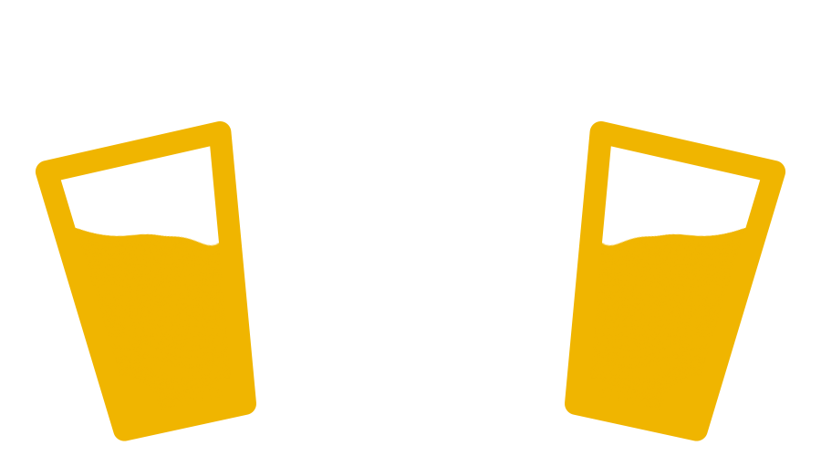

The Noun Project is collecting and creating the world's visual language. The site has become an important tool for designers, developers, architects, doctors, educators, and millions of other people who want to get their point across visually. The community keeps growing and more icons are added to the collection everyday.
Go upload/download some icons of your own.
